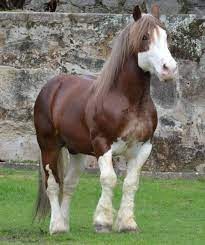

Bretão

-
O Bretão teve como raças formadoras as raças Suffolk (inglesa), Ardennes e Percheron (francesas), que foram sendo cruzadas com éguas nativas de médio e grande porte do noroeste da França e que, após anos de selecionamento, conseguiram um padrão no qual se dividia em três tipos: Trait, Postier e Petit Breton, sendo hoje o tipo Trait o mais difundido.
O Bretão foi trazido para o Brasil pelo exército, que precisava do animal para puxar os equipamentos de artilharia. As primeiras importações ocorreram em 1927 pelo Estado de São Paulo.